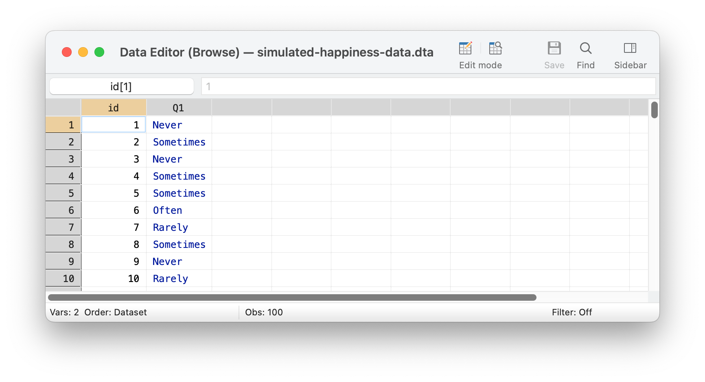

Excel is sometimes used as a program to collect and store data. However, Excel may be problematic as a data storage solution for a number of reasons detailed below. Notably, statistical programs like Stata, SAS, or SPSS all store additional information with each variable such as: a variable label, describing the contents of the variable, or the survey question that resulted in the variable; and a value label, which attaches qualitative information to each possible value of the response.
Excel does not generally contain this extra information about each variable, or column of data, which may lead to errors in working with quantitative information.
The data below are stored in Stata format, but could as easily be stored in SAS or SPSS format.
Get And Describe The Data

Screenshot of Stata
use"simulated-happiness-data.dta", cleardescribe
Contains data from simulated-happiness-data.dta
Observations: 100
Variables: 2 26 Nov 2023 13:43
---------------------------------------------------------------------------------------
Variable Storage Display Value
name type format label Variable label
---------------------------------------------------------------------------------------
id float %9.0g id
Q1 float %9.0g Likert1 How often do you feel happy?
---------------------------------------------------------------------------------------
Sorted by:
Descriptive Statistics and Bar Graph
Notice how the descriptive statistics and graph are informative in that they contain information on the variable label and value label. These help us to get an intuitive sense of the information in the data. We see this information when we list out the data as well.
How often |
do you feel |
happy? | Freq. Percent Cum.
------------+-----------------------------------
Never | 21 21.00 21.00
Rarely | 29 29.00 50.00
Sometimes | 28 28.00 78.00
Often | 22 22.00 100.00
------------+-----------------------------------
Total | 100 100.00
Bar Graph
use"simulated-happiness-data.dta", cleargraphbar, over(Q1) title("How often do you feel happy?") scheme(michigan2) asyvarsgraphexport mybar1.png, width(1500) replace
Adding this valuable information back into the data set may take a great deal of extra effort.
Descriptive Statistics and Bar Graph
Notice how the descriptive statistics and graph are much less informative. For example, it is now not immediately clear what Q1 represents.
It is also not clear whether higher values of Q1 represent higher levels of happiness, or higher levels of unhappiness, a crucially important substantive distinction. The information on variable label and value label will have to be added back into the data when preparing a report for dissemination.
use"simulated-happiness-data-EXCEL.dta", cleargraphbar, over(Q1) title("How often do you feel happy?") scheme(michigan2) asyvarsgraphexport mybar2.png, width(1500) replace
Bar Graph
A Few Final Issues
Notice how Excel doesn’t enforce the idea of whether variables are numeric, or string, and so would allow storage of different types of information in the same column. Relatedly, numeric variables may be improperly stored as strings, often necessitating recoding before graphical or statistical procedures can be employed.
Secondly, Excel would allow some of your columns to have the same name, which might make data difficult to work with in other software.